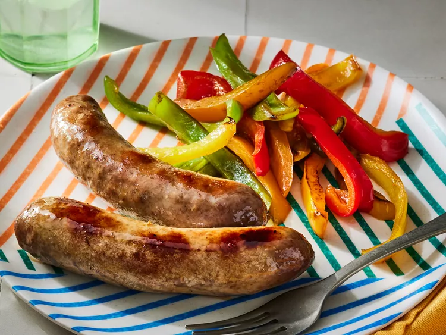

Sausage

Description
Wondering how to cook sausage? Fresh sausage is easy to cook - you can grill them, bake them in the oven, or cook them in a skillet on the stove top. We describe each method in detail so your sausages will turn out perfectly no matter which way you choose.
Ingredients
1 Pound fresh sausage links
Steps
Oven
Preheat oven to 350 degrees F (175 degrees C). Line a large rimmed baking sheet with aluminum foil or parchment paper.
Arrange sausage links in an even layer, with at least 1-inch in between each link, on prepared baking sheet.
Bake in the preheated oven until a thermometer inserted into thickest portion registers 160 degrees F (71 degrees C), about 20 minutes. Serve as desired.